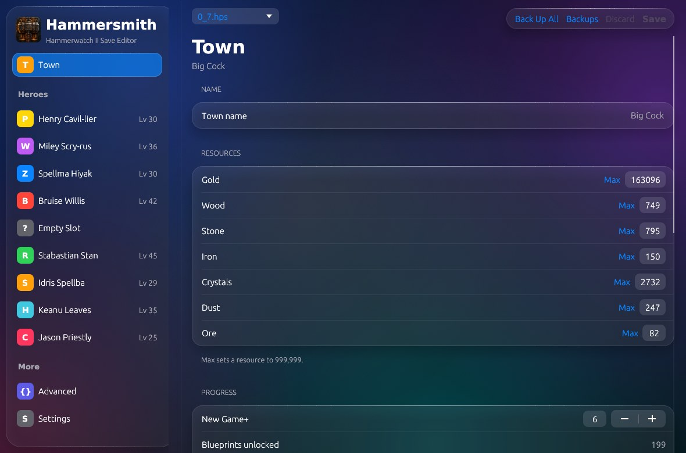
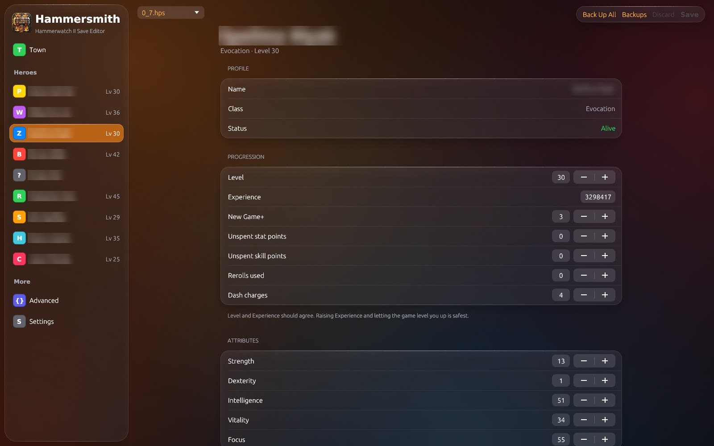
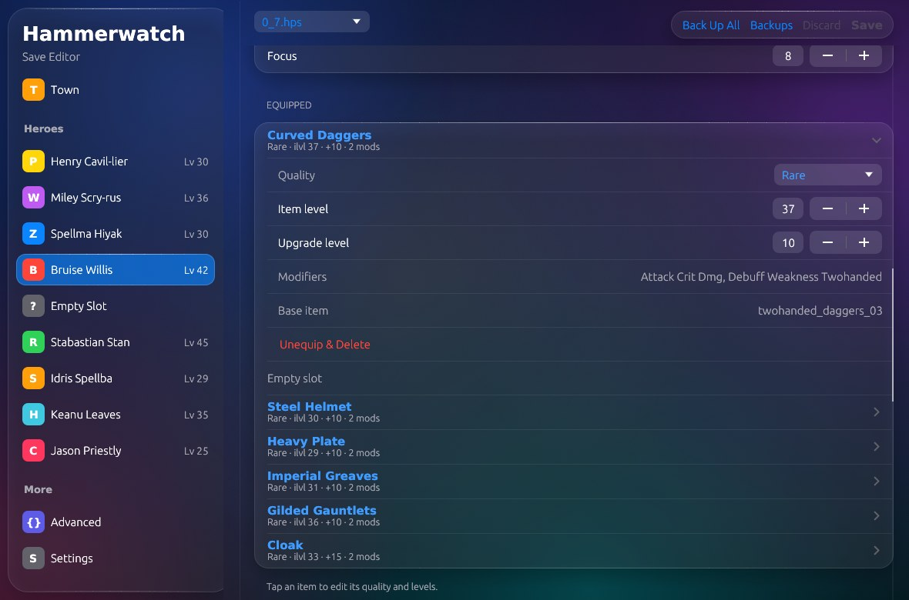
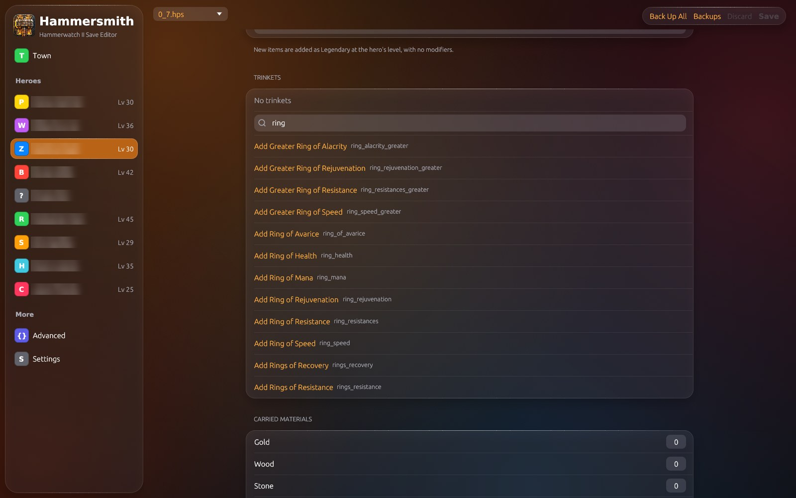
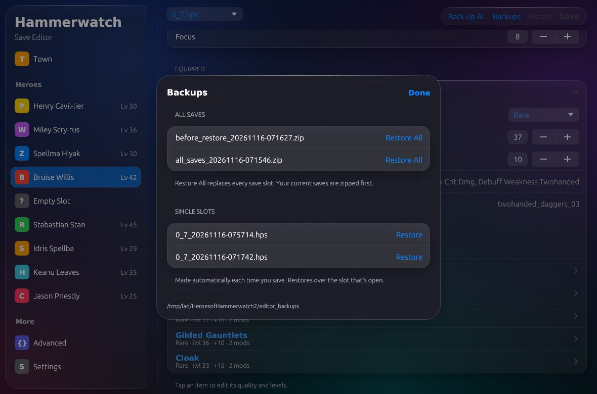
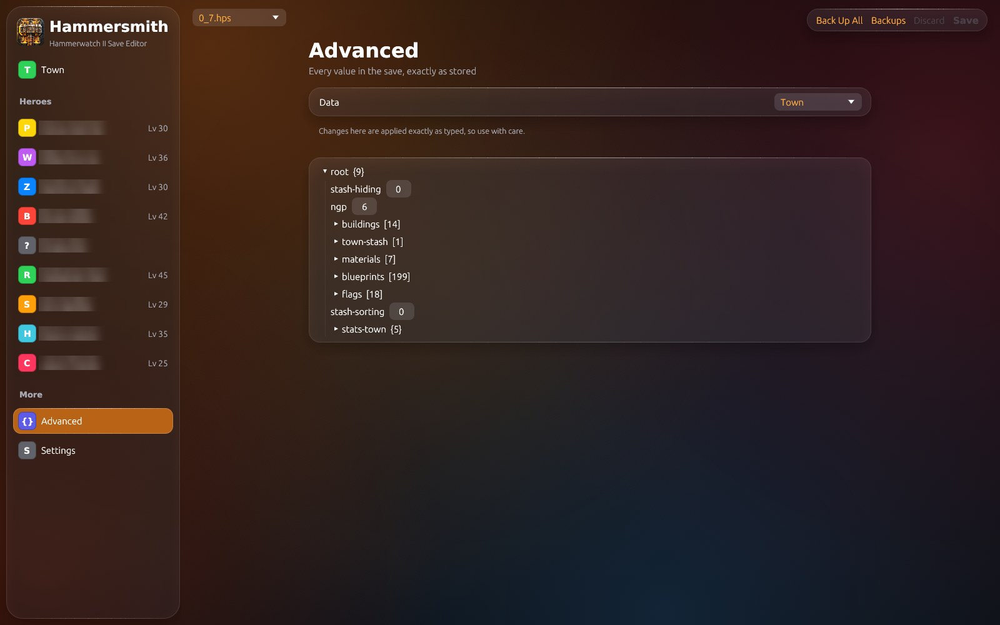
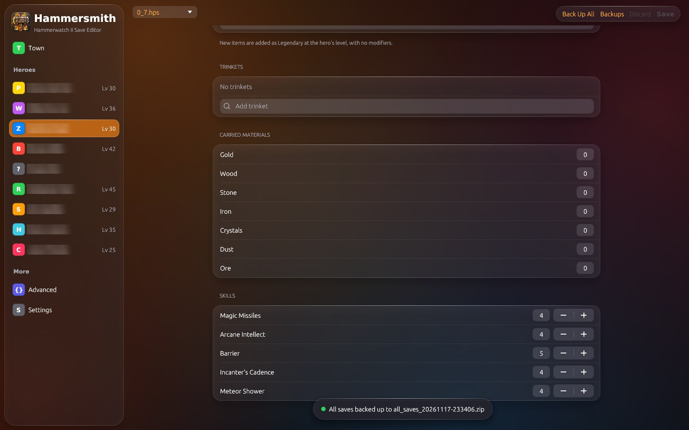

Hammersmith
Forge a better save.
A tiny, single-file save editor for Heroes of Hammerwatch II. It finds your Steam saves by itself and shows real item, trinket, skill and building names from your game.






Stock the vault.
Gold, Wood, Stone, Iron, Crystals, Dust and Ore, each with a one-click Max. Change your New Game+ level and town name, and see your buildings, blueprints and stash at a glance.
Every hero, every stat.
Name, level, experience and New Game+. Unspent stat and skill points, rerolls, dash charges, and Revive for fallen heroes. Strength, Dexterity, Intelligence, Vitality and Focus, plus every skill level.
Tap an item. Make it legendary.
Change any equipped or inventory item’s quality from Common to Legendary, its item level and its upgrade level, or delete it. Rarity colors and modifier names included.
Search it. Add it.
Find any item or trinket by name and add it in one click.
Every value, if you want it.
A raw editor for every value in the save, for anything the main screens don’t cover.
Safety comes first.
Your saves are precious. Hammersmith treats them that way.
Backup before every save
The save slot is backed up automatically before anything is written.
Back Up All
Zip every save slot into one file. Restore All brings them all back in one click.
Write, then verify
Every save is written, re-read and checked before your real file is replaced.
Checksum fixed
The save’s checksum is recalculated every time, so the game accepts it.
Untouched stays untouched
Anything you didn’t change is copied byte for byte.
Nothing to install
One small .exe. To uninstall, delete it.

- Game
- Heroes of Hammerwatch II (Steam)
- Finds saves
- Automatically, in your Steam save folder
- Names
- Items, trinkets, skills and buildings, read from your own game install
- Install
- None. A single small .exe
- Built with
- Rust
- Requires
- Windows 10 or 11 (64-bit)